Use Public Key Authentication with SSH
Updated by Linode Written by Linode
Password authentication is the default method most SSH (Secure Shell) clients use to authenticate with remote servers, but it suffers from potential security vulnerabilities, like brute-force login attempts. An alternative to password authentication is public key authentication, in which you generate and store on your computer a pair of cryptographic keys and then configure your server to recognize and accept your keys. Using key-based authentication offers a range of benefits:
Key-based login is not a major target for brute-force hacking attacks.
If a server that uses SSH keys is compromised by a hacker, no authorization credentials are at risk of being exposed.
Because a password isn’t required at login, you are able to able to log in to servers from within scripts or automation tools that you need to run unattended. For example, you can set up periodic updates for your servers with a configuration management tool like Ansible, and you can run those updates without having to be physically present.
This guide will explain how the SSH key login scheme works, how to generate an SSH key, and how to use those keys with your Linode.
NoteIf you’re unfamiliar with SSH connections, review the Getting Started with Linode guide.
How SSH Keys Work
SSH keys are generated in pairs and stored in plain-text files. The key pair (or keypair) consists of two parts:
A private key, usually named
id_rsa. The private key is stored on your local computer and should be kept secure, with permissions set so that no other users on your computer can read the file.Caution
Do not share your private key with others.A public key, usually named
id_rsa.pub. The public key is placed on the server you intend to log in to. You can freely share your public key with others. If someone else adds your public key to their server, you will be able to log in to that server.
When a site or service asks for your SSH key, they are referring to your SSH public key (id_rsa.pub). For instance, services like GitHub and Gitlab allow you to place your SSH public key on their servers to streamline the process of pushing code changes to remote repositories.
The authorized_keys File
In order for your Linode to recognize and accept your key pair, you will need to upload your public key to your server. More specifically, you will need to upload your public key to the home directory of the user you would like to log in as. If you would like to log in to more than one user on the server using your key pair, you will need to add your public key to each of those users.
To set up SSH key authentication for one of your server’s users, add your public key to a new line inside the user’s authorized_keys file. This file is stored inside a directory named .ssh/ under the user’s home folder. A user’s authorized_keys file can store more than one public key, and each public key is listed on its own line. If your file contains more than one public key, then the owner of each key listed will be able to log in as that user.
Granting Someone Else Access to your Server
To give someone else access to your server’s user, simply add their public key on a new line in your authorized_keys file, just as you would add your own. To revoke access for that person, remove that same line and save the changes.
Challenge-Response
When logging in to a server using SSH, if there is a public key on file on that server, the server will create a challenge. This challenge will be crafted in such a way that only the holder of the private SSH key will be able to decipher it.
This challenge-response action happens without any user interaction. If the person attempting to log in has the corresponding private key, then they will be safely logged in. If not, the login will either fail or fall back to a password-based authentication scheme.
SSH Key Passphrases
You can optionally provide an additional level of security for your SSH keys by encrypting them with a passphrase at the time of creation. When you attempt to log in using an encrypted SSH key, you will be prompted to enter its passphrase. This is not to be confused with a password, as this passphrase only decrypts the key file locally and is not transferred over the Internet as a password might be.
If you’d like to set up your logins so that they require no user input, then creating a passphrase might not be desirable, but it is strongly recommended nevertheless.
Linux and macOS
Generate a Key Pair
Perform the steps in this section on your local machine.
Create a new key pair.
Caution
This command will overwrite an existing RSA key pair, potentially locking you out of other systems.
If you’ve already created a key pair, skip this step. To check for existing keys, run
ls ~/.ssh/id_rsa*.If you accidentally lock yourself out of the SSH service on your Linode, you can still use the Lish console to login to your server. After you’ve logged in via Lish, update your
authorized_keysfile to use your new public key. This should re-establish normal SSH access.ssh-keygen -b 4096The
-bflag instructsssh-keygento increase the number of bits used to generate the key pair, and is suggested for additional security.Press Enter to use the default names
id_rsaandid_rsa.pubin the/home/your_username/.sshdirectory before entering your passphrase.Generating public/private rsa key pair. Enter file in which to save the key (/home/your_username/.ssh/id_rsa):While creating the key pair, you will be given the option to encrypt the private key with a passphrase. This means that the key pair cannot be used without entering the passphrase (unless you save that passphrase to your local machine’s keychain manager). We suggest that you use the key pair with a passphrase, but you can leave this field blank if you don’t want to use one.
Enter passphrase (empty for no passphrase): Enter same passphrase again: Your identification has been saved in /home/your_username/.ssh/id_rsa. Your public key has been saved in /home/your_username/.ssh/id_rsa.pub. The key fingerprint is: f6:61:a8:27:35:cf:4c:6d:13:22:70:cf:4c:c8:a0:23 your_username@linode
Upload your Public Key
There are a few different ways to upload your public key to your Linode from Linux and macOS client systems:
Using ssh-copy-id
ssh-copy-id is a utility available on some operating systems that can copy a SSH public key to a remote server over SSH.
To use
ssh-copy-id, pass your username and the IP address of the server you would like to access:ssh-copy-id your_username@192.0.2.0You’ll see output like the following, and a prompt to enter your user’s password:
/usr/bin/ssh-copy-id: INFO: Source of key(s) to be installed: "/home/your_username/.ssh/id_rsa.pub" /usr/bin/ssh-copy-id: INFO: attempting to log in with the new key(s), to filter out any that are already installed /usr/bin/ssh-copy-id: INFO: 1 key(s) remain to be installed -- if you are prompted now it is to install the new keys your_username@192.0.2.0's password:Verify that you can log in to the server with your key.
Using Secure Copy (scp)
Secure Copy (scp) is a tool that copies files from a local computer to a remote server over SSH:
CautionThese instructions will overwrite any existing contents of theauthorized_keysfile on your server. If you have already set up other public keys on your server, use thessh-copy-idcommand or enter your key manually.
Connect to your server via SSH with the user you would like to add your key to:
ssh your_username@192.0.2.0Create the
~/.sshdirectory andauthorized_keysfile if they don’t already exist:mkdir -p ~/.ssh && touch ~/.ssh/authorized_keysGive the
~/.sshdirectory andauthorized_keysfiles appropriate file permissions:chmod 700 ~/.ssh && chmod 600 ~/.ssh/authorized_keysIn another terminal on your local machine, use
scpto copy the contents of your SSH public key (id_rsa.pub) into theauthorized_keysfile on your server. Substitute in your own username and your server’s IP address:scp ~/.ssh/id_rsa.pub your_username@192.0.2.0:~/.ssh/authorized_keysVerify that you can log in to the server with your key.
Manually Copy an SSH Key
You can also manually add an SSH key to a server:
Begin by copying the contents of your public SSH key on your local computer. You can use the following command to output the contents of the file:
cat ~/.ssh/id_rsa.pubYou should see output similar to the following:
ssh-rsa AAAAB3NzaC1yc2EAAAADAQABAAABAQCyVGaw1PuEl98f4/7Kq3O9ZIvDw2OFOSXAFVqilSFNkHlefm1iMtPeqsIBp2t9cbGUf55xNDULz/bD/4BCV43yZ5lh0cUYuXALg9NI29ui7PEGReXjSpNwUD6ceN/78YOK41KAcecq+SS0bJ4b4amKZIJG3JWmDKljtv1dmSBCrTmEAQaOorxqGGBYmZS7NQumRe4lav5r6wOs8OACMANE1ejkeZsGFzJFNqvr5DuHdDL5FAudW23me3BDmrM9ifUzzjl1Jwku3bnRaCcjaxH8oTumt1a00mWci/1qUlaVFft085yvVq7KZbF2OPPbl+erDW91+EZ2FgEi+v1/CSJ5 your_username@hostnameNote that the public key begins with
ssh-rsaand ends withyour_username@hostname.Once you have copied that text, connect to your server via SSH with the user you would like to add your key to:
ssh your_username@192.0.2.0Create the
~/.sshdirectory andauthorized_keysfile if they don’t already exist:mkdir -p ~/.ssh && touch ~/.ssh/authorized_keysGive the
~/.sshdirectory andauthorized_keysfiles appropriate file permissions:chmod 700 ~/.ssh && chmod 600 ~/.ssh/authorized_keysOpen the
authorized_keysfile with the text editor of your choice (nano, for example). Then, paste the contents of your public key that you copied in step one on a new line at the end of the file.Save and close the file.
Note
If you initially logged into the server as
rootbut edited theauthorized_keysfile of another user, then the.ssh/folder andauthorized_keysfile of that user may be owned byroot. Set that other user as the files’ owner:chown -R your_username:your_username /home/your_username/.sshVerify that you can log in to the server with your key.
Connect to the Remote Server
SSH into the server from your local machine:
ssh your_username@192.0.2.0If you chose to use a passphrase when creating your SSH key, you will be prompted to enter it when you attempt to log in. Depending on your desktop environment, a window may appear:
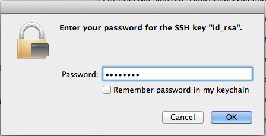
Caution
Do not allow the local machine to remember the passphrase in its keychain unless you are on a private computer which you trust.You may also see the passphrase prompt at your command line:
Enter passphrase for key '/root/.ssh/id_rsa':Enter your password. You should see the connection establish in the local terminal.
Windows
The following instructions use the PuTTY software to connect over SSH, but other options are available on Windows too.
Generate a Key Pair with PuTTY
Download PuTTYgen (
puttygen.exe) and PuTTY (putty.exe) from the official site.Launch
puttygen.exe. TheRSAkey type at the bottom of the window is selected by default for an RSA key pair butED25519(EdDSA using Curve25519) is a comparable option if your remote machine’s SSH server supports DSA signatures. Do not use theSSH-1(RSA)key type unless you know what you’re doing.Increase the RSA key size from
2048bits4096and click Generate: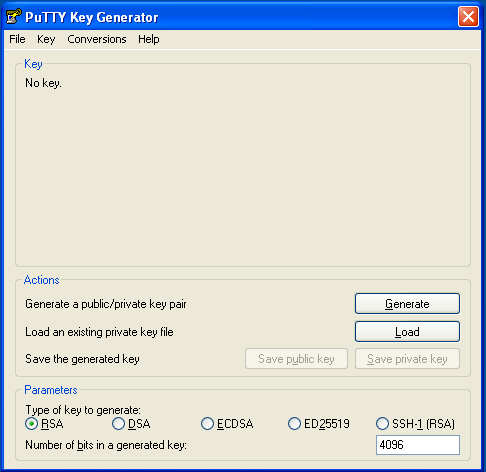
PuTTY uses the random input from your mouse to generate a unique key. Once key generation begins, keep moving your mouse until the progress bar is filled:
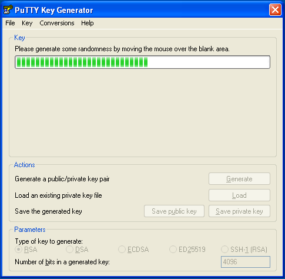
When finished, PuTTY will display the new public key. Right-click on it and select Select All, then copy the public key into a Notepad file.
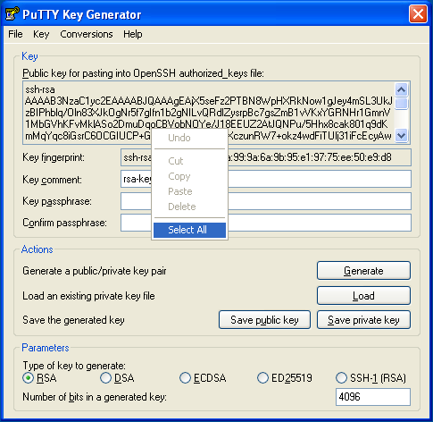
Save the public key as a
.txtfile or some other plaintext format. This is important–a rich text format such as.rtfor.doccan add extra formatting characters and then your private key won’t work: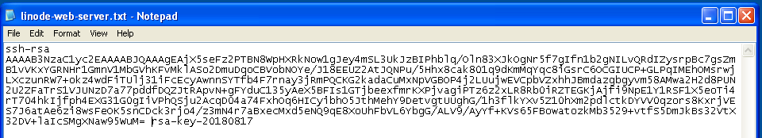
Enter a passphrase for the private key in the Key passphrase and Confirm passphrase text fields. Important: Make a note of your passphrase, you’ll need it later:
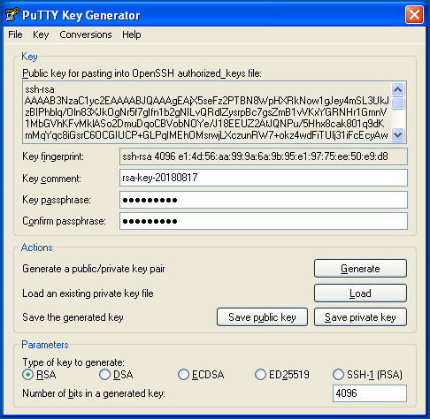
Click Save private key. Choose a file name and location in Explorer while keeping the
ppkfile extension. If you plan to create multiple key pairs for different servers, be sure to give them different names so that you don’t overwrite old keys with new: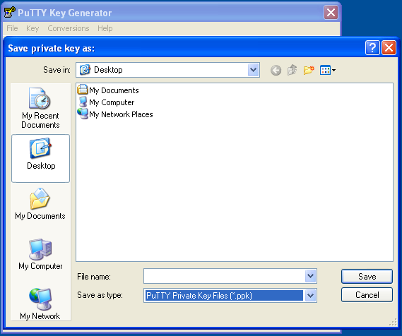
Manually Copy the SSH Key with PuTTY
Launch
putty.exe. Find the Connection tree in the Category window, expand SSH and select Auth. Click Browse and navigate to the private key you created above: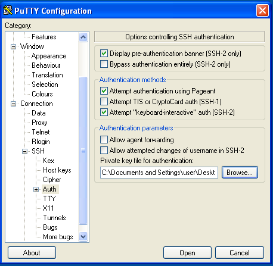
Scroll back to the top of the Category window and click Session. Enter the hostname or IP address of your Linode. PuTTY’s default TCP port is
22, the IANA assigned port for for SSH traffic. Change it if your server is listening on a different port. Name the session in the Saved Sessions text bar and click Save: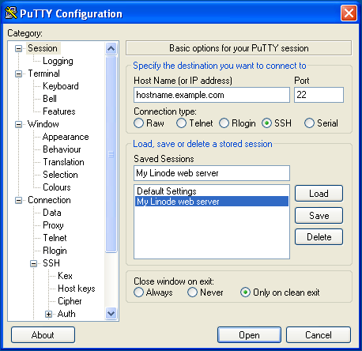
Click the Open button to establish a connection. You will be prompted to enter a login name and password for the remote server.
Once you’re logged in to the remote server, configure it to authenticate with your SSH key pair instead of a user’s password. Create an
.sshdirectory in your home directory on your Linode, create a blankauthorized_keysfile inside, and set their access permissions:mkdir -p ~/.ssh && touch ~/.ssh/authorized_keys chmod 700 ~/.ssh && chmod 600 ~/.ssh/authorized_keysOpen the
authorized_keysfile with the text editor of your choice (nano, for example). Then, paste the contents of your public key that you copied in step one on a new line at the end of the file.Save, close the file, and exit PuTTY.
Verify that you can log in to the server with your key.
Using WinSCP
Uploading a public key from Windows can also be done using WinSCP:
CautionThese instructions will overwrite any existing contents of theauthorized_keysfile on your server. If you have already set up other public keys on your server, use the PuTTY instructions instead.
In the login window, enter your Linode’s public IP address as the hostname, the user you would like to add your key to, and your user’s password. Click Login to connect.
Once connected, WinSCP will show two file tree sections. The left shows files on your local computer and the right shows files on your Linode. Using the file explorer on the left, navigate to the file where you saved your public key in Windows. Select the public key file and click Upload in the toolbar above.
You’ll be prompted to enter a path on your Linode where you want to upload the file. Upload the file to
/home/your_username/.ssh/authorized_keys.Verify that you can log in to the server with your key.
Connect to the Remote Server with PuTTY
Start PuTTY and Load your saved session. You’ll be prompted to enter your server user’s login name as before. However, this time you will be prompted for your private SSH key’s passphrase rather than the password for your server’s user. Enter the passphrase and press Enter.
Troubleshooting
If your SSH connections are not working as expected, or if you have locked yourself out of your system, review the Troubleshooting SSH guide for troubleshooting help.
Upload your SSH Key to the Cloud Manager
It is possible to provision each new Linode you create with an SSH public key automatically through the Cloud Manager.
Log in to the Cloud Manager.
Click on your username at the top right hand side of the page. Then click on My Profile in the dropdown menu that appears:
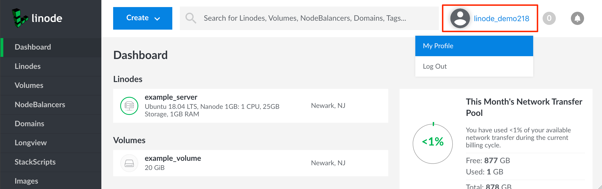
Note
If you are viewing the Cloud Manager in a smaller browser window or on a smaller device, then the My Profile link will appear in the sidebar links. To view the sidebar links, click on the disclosure button to the left of the blue Create button at the top of the page.From the My Profile page, select the SSH Keys tab, and then click Add a SSH Key:
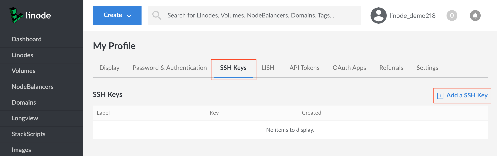
Create a label for your key, then paste in the contents of your public SSH key (
id_rsa.pub):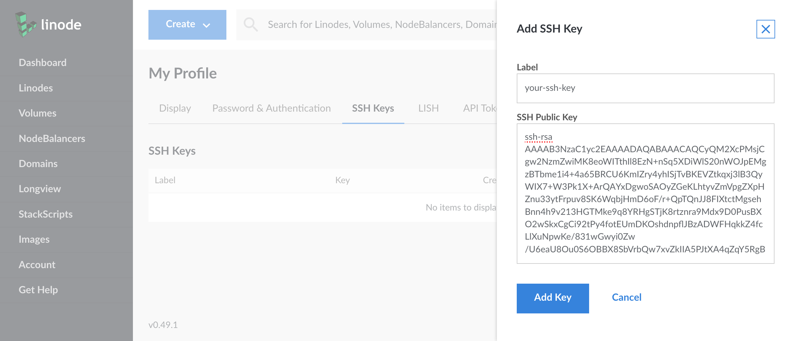
Click Add Key.
When you next create a Linode you’ll be given the opportunity to include your SSH key in the Linode’s creation. This key will be added to the root user of the new Linode.
In the Create Linode form, select the SSH key you’d like to include. This field will appear below the Root Password field:
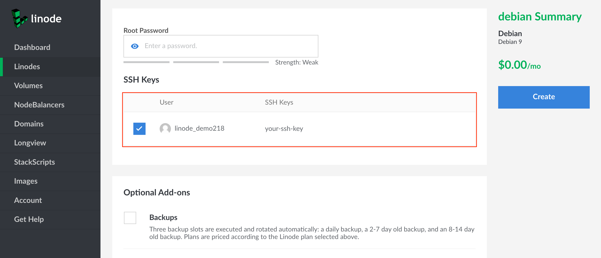
Next Steps
After you set up your SSH keys and confirm they are working as expected, review the How to Secure Your Server guide for instructions on disabling password authentication for your server.
Join our Community
Find answers, ask questions, and help others.
This guide is published under a CC BY-ND 4.0 license.